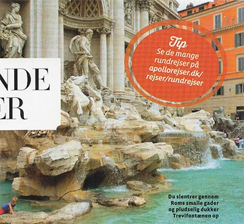
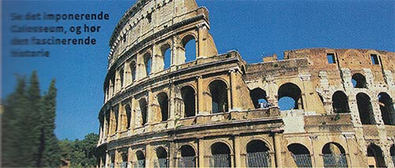
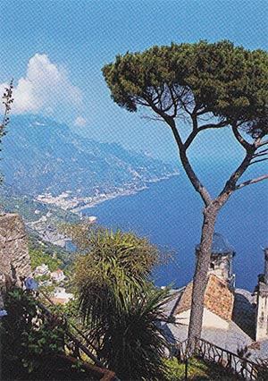
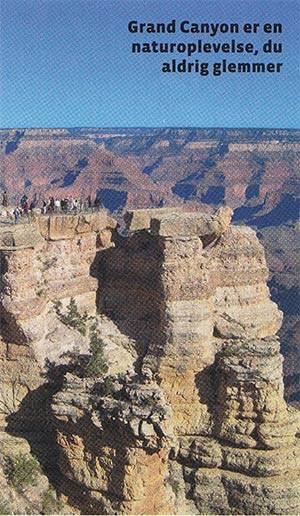

Italien
Toscana på kryds og tværs
Verdenskendt kunst, middelalderbyer og udsøgt mad og vin. Mærk sjælen af Tascana.
Denne kulturelle toscanske vitaminbombe indeholder højdepunkter som et besøg i middelalderens rige og mægtige by Firenze, der har haft Leonardo da Vinci og Michelangelo boende. Du oplever smukke Sienna med de rødbrune bygninger, Pisa med sit skæve tårn. Du kommer til Elba, hvor Napoleon har opholdt sig og får historien om Assisi. Der bliver masser af slentreture i små, krogede gader, tid til cafébesøg og ikke mindst rig lejlighed til at nyde italiensk mad og vin i verdensklasse.
Italien
Det bedste af Rom
Oplev Rom til fods i de smukke gader, og hør historierne om de spektakulære bygninger.
Byrundtur i hjertet af Rom, hvor du kommer forbi Piazza Venezia, Pantheon, Trevifontænen og Den Spanske Trappe. Du indføres i Roms grundhistorie under besøg i både Peterskirken, Vatikanmuseerne og Det Sixtinske Kapel. Vi besøger også Sabinerbjergene og en af Italiens mest berømte renæssancevillaer. Der er selvfølgelig også afsat tid på egen hånd til shopping – for eksempel på Roms største udendørs loppemarked, Porta Porthese, slentreture i de smalle gader, hygge på de charmerende pladser og restaurantbesøg.
Italien
Rom og Amalfi
Roms fantastiske historie foldes ud, og Amalfikystens bedste perler besøges på denne rundrejse
På turen langs Amalfikysten kommer du tæt på kendte byer og den italienske kultur. Gå gennem smalle stræder og se papirmuseet i Amalfi og de velbevarede oldtidsruiner i Pompei. På det eksklusive Capri kan duften af oliven- og citronlunde nydes og i klostret Montecassino stilheden i magiske omgivelser. I Rom ledes du ind i verdenshistorien fra Romerriget, kejserne til middelalder, renæssance og barok. Et imponerende bombardement af fantastisk arkitektur, skulpturer og malerier. Du skal blandt andet opleve Colosseum, Forum Romanum, Peterskirken, Trevifontænen, Den Spanske Plads og Vatikanmuseerne.
USA
Den amerikanske drøm
Kom tæt på drømmenes Amerika på turen gennem tre stater med alt, hvad hjertet kan begære
Filmstjernens Hollywood Boulevard, den bakkede by San Francisco, Death Valley, Grand Canyon og Mammoth Lakes er nogle af højdepunkterne på turen gennem staterne. Hør alle de gode fortællinger om indianere, cowboys, gangstere, filmstjerner og gamblere. Fornem suset fra de storslåede naturlandskaber, og nyd det enorme udbud af mad og vin. Er du modig, kan du prøve at vinde jackpotten ved spillebordet i Las Vegas. Og shop amok i det store Premium Shopping Outlet.